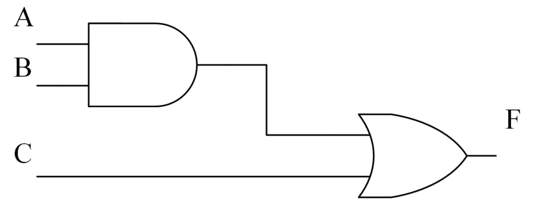
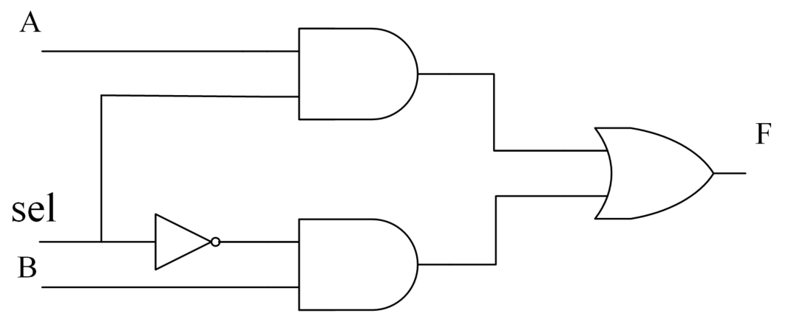

Este tutorial menciona con frecuencia el término síntesis. Es decir, algunos diseños lógicos no se pueden sintetizar en circuitos reales, o algunos diseños lógicos, después de la síntesis, pueden presentar ciertos riesgos de seguridad. Este capítulo presenta brevemente los conceptos relacionados con la síntesis lógica, solo desde un nivel teórico y desde el punto de vista del conocimiento general. Cuando aquel joven ingenuo y ávido de conocimiento se convierta en un tío calvo de mediana edad, presentaremos la práctica concreta de la síntesis lógica. Parece que no falta mucho tiempo (con ironía).
Conceptos básicos
La síntesis es el proceso de convertir la descripción de alto nivel de un diseño digital en una lista de conexiones (netlist) a nivel de puertas optimizada, basándose en la biblioteca de celdas estándar y restricciones de diseño específicas. La biblioteca de celdas estándar corresponde a la biblioteca de proceso, puede incluir celdas de puertas lógicas básicas como compuertas AND, NOT, etc., así como macrocélulas especiales, como multiplicadores, flip-flops de reloj especiales, etc. Las restricciones de diseño generalmente incluyen restricciones en tiempo, carga, área y consumo de energía.
Ya sea en el diseño de chips digitales o en el desarrollo de FPGA, el proceso de síntesis actualmente se basa básicamente en herramientas de síntesis lógica asistidas por computadora, que convierten automáticamente la descripción de alto nivel en circuitos de puertas lógicas. Los diseñadores pueden concentrarse en el esquema de arquitectura del sistema, la descripción de alto nivel, las restricciones de diseño y la biblioteca de proceso estándar, sin tener que preocuparse por cómo se convierte la descripción de alto nivel en circuitos a nivel de puertas. La herramienta de síntesis realiza repetidamente transformaciones y optimizaciones lógicas internamente, y finalmente genera el circuito a nivel de puertas óptimo. El proceso se muestra a continuación.

Explicación estructural
Las sentencias de asignación simples generalmente se sintetizan en celdas de puertas lógicas básicas.
assign F = (A & B) | C ;
El código anterior generalmente se sintetiza en el siguiente circuito a nivel de puertas:

Las sentencias condicionales generalmente se sintetizan en selectores (multiplexores).
assign F = sel ? A : B ;
El código anterior generalmente se sintetiza en el siguiente circuito a nivel de puertas:

Las sentencias de asignación disparadas por reloj en un bloque `always` generalmente se sintetizan en flip-flops.
always @(posedge clk) begin
q <= d ;
end
El código anterior generalmente se sintetiza en el siguiente circuito:

Por muy complejo que sea el diseño, después de la síntesis se convertirá en una netlist a nivel de puertas compuesta por diversos elementos de la biblioteca de celdas. En resumen, la síntesis lógica puede entenderse en sentido estricto como el proceso de convertir un diseño Verilog en una representación mediante celdas de puertas lógicas básicas optimizadas y macrocélulas especiales.
Flujo de síntesis
El proceso de síntesis detallado desde la descripción RTL de alto nivel hasta la netlist a nivel de puertas se muestra en la siguiente figura.

Descripción RTL
Utilizar un lenguaje de descripción de hardware (por ejemplo, Verilog) para diseñar circuitos digitales y realizar simulaciones para garantizar la corrección de la función lógica.
Traducción
La descripción RTL se convierte mediante la herramienta de síntesis en una representación intermedia no optimizada. Este proceso lee las primitivas y operaciones básicas de la descripción Verilog, sin considerar restricciones de diseño como área, tiempo o consumo de energía, y solo realiza una asignación interna de recursos simple.
Representación intermedia no optimizada
La representación intermedia generada durante el proceso de traducción tiene un formato de datos reconocido internamente por la herramienta de síntesis; el usuario no puede ni necesita conocerlo.
Optimización lógica
Optimizar la lógica del diseño, eliminando lógica redundante. Este proceso a menudo elimina o renombra algunas variables del diseño RTL, y el proceso de implementación lógica también suele cambiar, para lograr una implementación lógica optimizada. Este proceso genera una representación interna optimizada.
Mapeo tecnológico y optimización
Antes de este paso, el proceso de descripción del diseño es independiente de la tecnología objetivo. En este paso, la herramienta de síntesis utiliza las celdas lógicas proporcionadas en la biblioteca de proceso (biblioteca de celdas estándar) para implementar la representación interna del diseño. Es decir, el diseño se mapea a la tecnología objetivo. Durante el proceso de implementación, también se deben cumplir las restricciones de tiempo, área y consumo de energía, y realizar algunas optimizaciones locales.
Biblioteca de celdas estándar
Como se mencionó anteriormente, la biblioteca de celdas estándar corresponde a la biblioteca de proceso, puede contener celdas de puertas lógicas básicas como compuertas AND, NOT, etc., así como macrocélulas especiales, como multiplicadores, flip-flops especiales, etc.
Para un mejor mapeo y optimización, cada celda lógica debe incluir la siguiente información:
- 1. Descripción funcional
- 2. Área de layout
- 3. Información de tiempos
- 4. Información de consumo de energía
Restricciones de diseño
Las restricciones de diseño generalmente incluyen restricciones en tiempo, área, consumo de energía, etc. A menudo existe una relación de restricción mutua entre estos tres factores. Para optimizar el tiempo, puede ser necesario aumentar los recursos de hardware, lo que provoca un mayor área del circuito y un mayor consumo de energía. Para obtener un circuito de menor tamaño, se debe transigir en la velocidad del circuito. En el diseño de circuitos digitales, a menudo es necesario combinar varios factores y hacer concesiones.
Representación a nivel de puertas optimizada
Después de completar el mapeo tecnológico y la optimización, se genera finalmente una netlist a nivel de puertas optimizada descrita por la biblioteca de proceso objetivo. Si dicha netlist cumple con los requisitos de varias restricciones, se convierte en el layout final. De lo contrario, es necesario modificar las restricciones de diseño u optimizar la descripción RTL para obtener un resultado de netlist a nivel de puertas que cumpla con las restricciones. Este proceso es iterativo hasta que la netlist final cumpla con los requisitos.